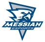
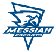
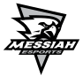
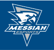

01 / COLOR
Institutional core
Messiah navy#002856Official primary
White#FFFFFFOfficial primary
Light blue#1C8AC2Official secondary
Gray#5B6770Official secondary
Blue carries recognition; white creates the clean seams between panes. Light blue and gray support, rather than replace, the primary pair.
02 / PRISM ACCENTS
Light through glass
#0B7367
#11698C
#614495
#E5AE3A
#D6742A
#A63738
These are published tertiary colors. Each plate uses them as light, never as a new logo color.
03 / TYPE
Readable at broadcast scale
FALCONS IN FLIGHT
Hanken Grotesk is the university manual’s suggested alternate to licensed Priori Sans for internal work. Use its bold weights for scene titles and scores.
see anew
Aleo is the manual’s suggested alternate to licensed Aptifer. Use sparingly for editorial moments, never small score data.
04 / MARKS
Messiah Esports identity
Project-supplied LeagueOS logo
University site mark
The 2026 athletics guide places the esports logo within its approved athletics-related marks and shows eight color and background treatments. The library below clips their vector artwork directly from page 51.
05 / MOTION
Broadcast first
- Eight-second seamless loops; no hard scene cuts inside a plate.
- Quiet center for titles, rosters, standings, or a scoreboard.
- Outer-frame energy from glass seams, rails, light, and signal.
- Hardline concepts draw the extracted marks intact at low opacity as source art.
06 / EXTRACTED ARTWORK
Eight esports logo variants
Vector clips and transparent PNG previews from page 51 of the 2026 guide. Dark-background samples include the guide's blue presentation field. Use the variant suited to its background; the guide asks users to request production files and permission from Messiah Athletics.

Primary · lightSVGPNG
Blue + whiteSVGPNG
Black + whiteSVGPNG
Dark backgroundSVGPNGWordmark · black + whiteSVGPNG